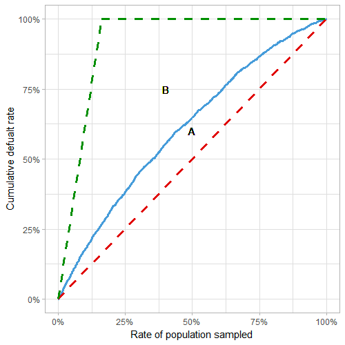
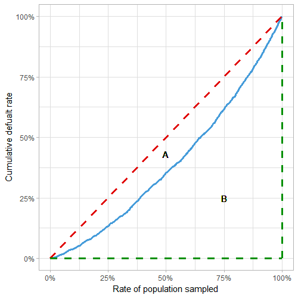
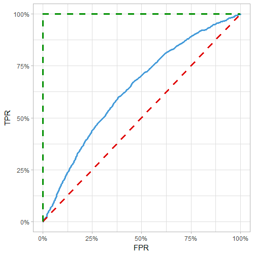
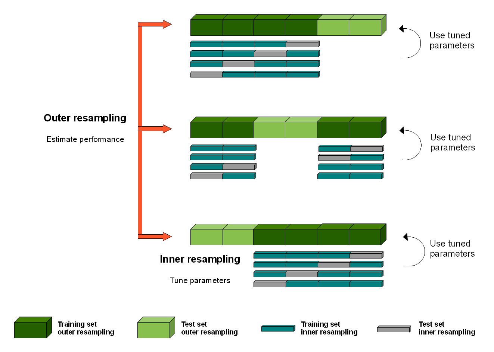

Model Validation
1 R-squared
\[R^2 = \frac{\sum(y_i - \bar{y})^2 - \sum(y_i - \hat{y_i})^2}{\sum(y_i - \bar{y})^2}\] Perfect model: \(\hat{y_i} = y_i\) so \(R^2 = 1\)
2 Gini
Ratio of how close model is to perfect model and how far it is from a random model. Gini = 1 → perfect model, Gini = 0 → random model
This article derives Gini using three methods: from the CAP curve, from the Lorenz curve, and from the ROC curve.
In all cases, order data by prediction, plot cumulative response vs cumulative proportion of sample
Red line: random model, blue line: actual model, green line: perfect model
- Gini = A/(A+B) = 2*AUC - 1
From CAP curve:

From Lorenz curve:

From ROC curve:

3 Lift Chart
3.1 Single Lift
Order data by prediction/weight, group into bins (e.g. deciles) with equal weight (e.g. earned car years)
Within each bin, get average predicted and actual value
3.2 Double Lift
For comparing 2 predictions to actual
Order data by prediction_1/prediction_2, group into bins
Within each bin, get averaged prediction_1, prediction_2, and actual value
4 Binomial Deviance
Deviance = \(2 \sum o_i log \left( \frac{o_i}{e_i} \right)\) where \(o_i\) denotes observed, \(e_i\) denotes expected, and the sum is over both successes and failures for each i
Gives measure of deviance of fitted glm with respect to perfect model (aka saturated model, a model that perfectly fits the data)
Alternate definitions: Deviance = \(-2 \left[ l(\hat{\beta}) - l_s \right]\) where the log-likelihood of the fitted model \(l(\hat{\beta})\) is always smaller than the saturated model
For a linear model, Deviance = \(RSS(\hat{\beta})\) = SSE
Deviance is always greater than or equal to 0, if 0 then the fit is perfect
Generally compared to null deviance \(D_0 = -2 \left[ l(\hat{\beta}_0) - l_s \right]\) which compares a model without predictors (intercept only) to the perfect model
- For a linear model, \(D_0\) = SST
To quantify the percent of deviance explained (ratio indicating how close the fit is to being perfect) use \(R^2 = 1- \frac{D}{D_0}\)
For a linear model, \(R^2 = 1-\frac{SSE}{SST}\)
Also known as McFadden’s R2= \(1 - \frac{log(L_{full})}{log(L_{intercept})}\) where Lfull is the likelihood value from the fitted model.
The likelihood contribution of each observation is between 0 and 1, so the log likelihood is always negative
If the model has no predictive ability → likelihood of model similar to likelihood of intercept → R2 close to 0
If model explains almost everything → likelihood value for each observation close to 1 → log(1) = 0 → R2 close to 1
In R, deviance is returned in
summaryas “Residual deviance” and “Null deviance”To calculate log likelihood of fitted model: \(\sum \left( log(\hat{y}_i)*y_i + log(1-\hat{y}_i)*(1-y_i) \right)\) where \(\hat{y_i}\) is the fitted probability and \(y_i\) is the actual response value
- For the null model: use \(\hat{y} = mean(y)\) using the y values from the training data
5 Metrics from Confusion Matrix

Precision = positive predictive value = TP / (TP + FP)
Sensitivity = recall = true positive rate = TP / (TP + FN)
Specificity = true negative rate = TN / (TN + FP)
F1 score = \(2 \frac{Precision * Recall}{Precision + Recall}\)
Matthew’s correlation coefficient = MCC = \(\frac{TP * TN - FP * FN}{\sqrt{(TP+FP)(TP+FN)(TN+FP)(TN+FN)}}\)
- Between -1 and 1: 1 → perfect prediction, 0 → no better than random, -1 → total disagreement between prediction and observation
6 Confidence Intervals for Machine Learning
See here for more details
For classification accuracy: assume Gaussian distribution of the proportion, use Binomial proportion confidence interval
- intervals = z*sqrt( (accuracy * (1-accuracy)) / n)
Nonparametric Confidence Interval
Use bootstrap resampling:
Sample with replacement to get dataset of size n
Calculate statistic on sample
Repeat (maybe 100 times)
Calculate central tendency (median) of 100 sample statistics, and 2.5th and 97.5th percentile
7 Nested Cross Validation
Motivation/Theory, Method/Figure
K-fold cross-validation is used both in the selection of model hyperparameters to configure each model and in the selection of configured model and can lead to overfitting. Each time a model with different model hyperparameters is evaluated on a dataset, it provides information about the dataset.
Method

Split into K fold (outer folds)
Within each K fold:
Split the outer training set (dark green) into L folds (blue/gray)
For each L fold:
Train each hyperparameter on inner training (blue), test on inner test (gray)
For each hyperparameter: average metrics across L folds, choose best
Train on outer training (dark green) with best hyperparameter
Test on outer test (light green)
Calculate mean metrics over all K folds
Cost of validation
Cross-validation = n*k = hyperparameters * models
Nested cross-validation = L*n*k = inner models * hyperparameters * outer models